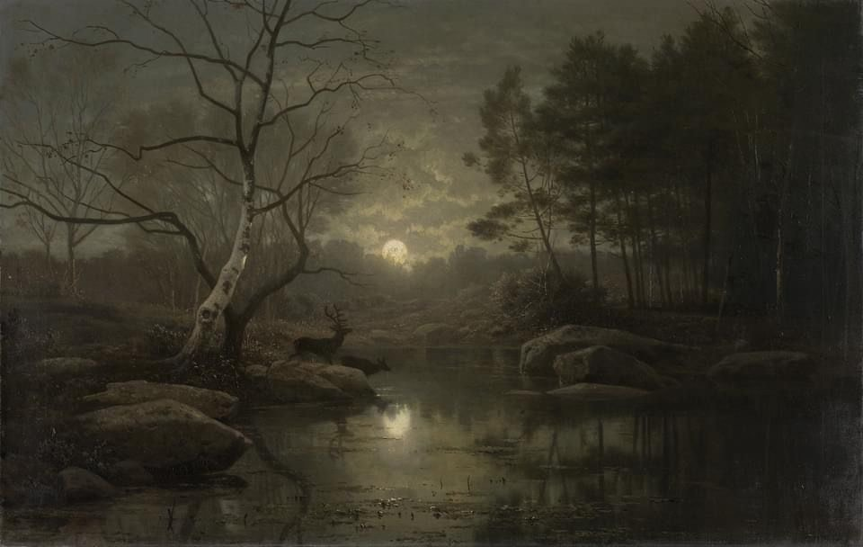
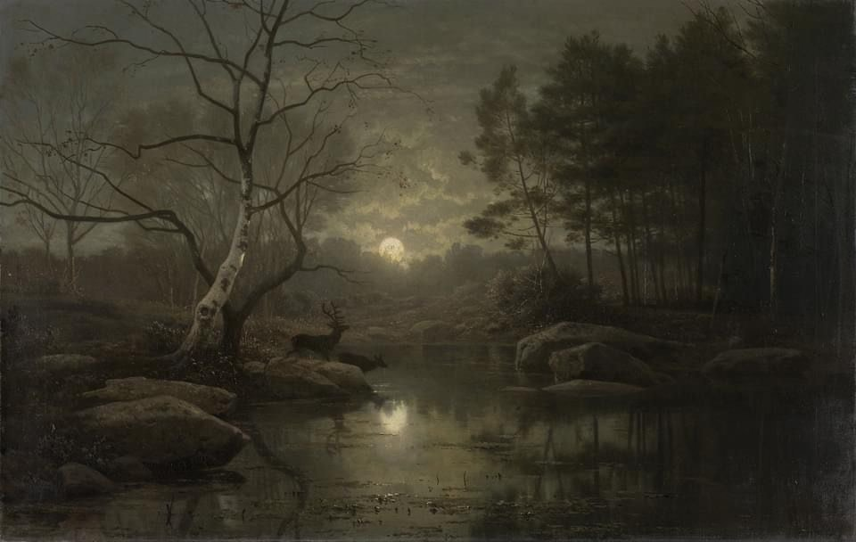

Mondschein in Kunst und Kultur
🎼 Musik
Beethovens Klaviersonate Nr. 14, bekannt als „Mondscheinsonate“, ist eines der berühmtesten Werke der Musikgeschichte. (Wikipedia)
📖 Literatur
„Und meine Seele spannte weit ihre Flügel aus…“
— Joseph von Eichendorff (Projekt Gutenberg)
🎨 Malerei
Caspar David Friedrich nutzt Mondschein als zentrales Motiv der romantischen Landschaftsmalerei. (Hamburger Kunsthalle)
 
